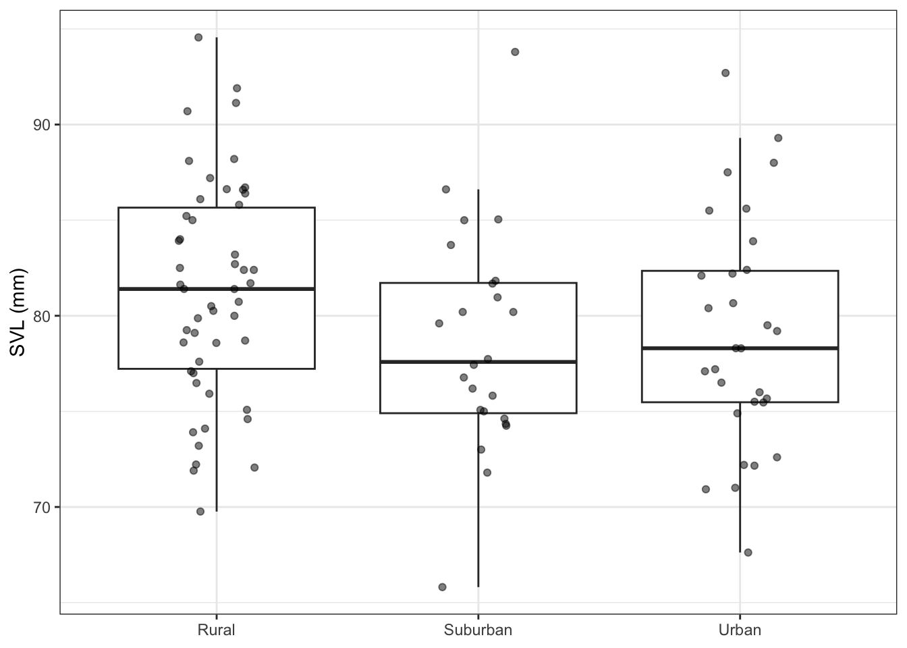
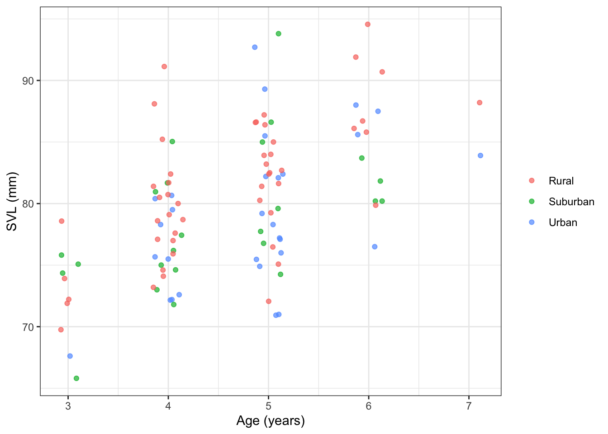
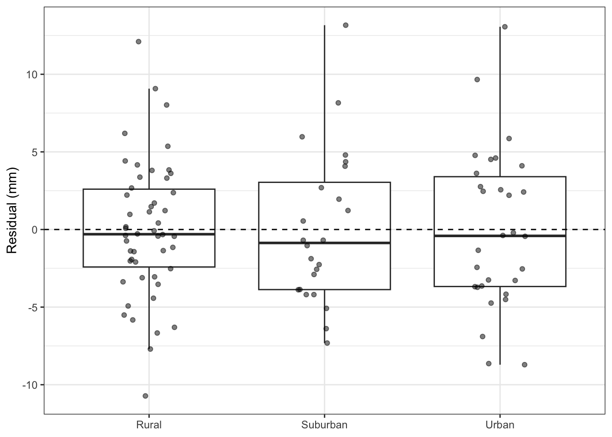

toads <- read_csv("../data/female-american-toads.csv") |>
mutate(
habitat = str_to_title(POP) # Convert to title case
) |>
select(habitat, svl = SVL, weight = Weight, age = Age)Overview
Cities build stormwater ponds to manage runoff, and amphibians breed in them. Are these ponds good habitat? If urban habitat is lower quality, urban amphibians should grow more slowly and be smaller at the same age than rural amphibians. Smaller females lay fewer eggs, so size matters for population persistence.
Jennette et al. (2019) measured female American toads (Anaxyrus americanus) breeding in rural, suburban, and urban ponds in Baltimore County, Maryland.
- habitat: rural, suburban, or urban
- svl: snout-vent length (mm), a measure of body size
- weight: somatic dry weight
- age: years, estimated from growth rings in toe bones (skeletochronology)
In the pre-class slides, you compared the sizes of wood frogs among habitats. Today you’ll ask the same question for toads, then ask one more: does habitat matter once we account for age? Each question is a comparison between a simpler and a more complex model.
Part 1: Explore
Make a plot of toad size (SVL) by habitat.
ggplot(toads, aes(habitat, svl)) +
geom_boxplot(outlier.shape = NA) +
geom_jitter(width = 0.15, alpha = 0.5) +
labs(x = NULL, y = "SVL (mm)")
How many toads are in each habitat? Which habitat is the reference level?
count(toads, habitat)# A tibble: 3 × 2
habitat n
<chr> <int>
1 Rural 50
2 Suburban 24
3 Urban 30sort(unique(toads$habitat))[1] "Rural" "Suburban" "Urban" Answer: 50 rural, 24 suburban, and 30 urban toads. Rural is the reference level. habitat is text, so lm() sorts its values alphabetically and uses the first one as the reference.
Part 2: One-way ANOVA
State the hypotheses
Question: Does toad size differ among habitats?
\(H_0\): \(\mu_{rural} = \mu_{suburban} = \mu_{urban}\)
\(H_A\): at least one habitat mean differs
Fit the models
Fit the simpler model (intercept-only) and the more complex model (habitat).
null_lm <- lm(svl ~ 1, toads)
habitat_lm <- lm(svl ~ habitat, toads)
summary(habitat_lm)
Call:
lm(formula = svl ~ habitat, data = toads)
Residuals:
Min 1Q Median 3Q Max
-12.7933 -3.7558 -0.6318 3.7750 15.1967
Coefficients:
Estimate Std. Error t value Pr(>|t|)
(Intercept) 81.2800 0.8239 98.652 <2e-16 ***
habitatSuburban -2.6767 1.4467 -1.850 0.0672 .
habitatUrban -2.2663 1.3454 -1.684 0.0952 .
---
Signif. codes: 0 '***' 0.001 '**' 0.01 '*' 0.05 '.' 0.1 ' ' 1
Residual standard error: 5.826 on 101 degrees of freedom
Multiple R-squared: 0.04404, Adjusted R-squared: 0.02511
F-statistic: 2.326 on 2 and 101 DF, p-value: 0.1029Interpret each coefficient of habitat_lm in a sentence.
Answer: Rural toads average 81.3 mm SVL (\(\hat\beta_0\)). Suburban toads average 2.7 mm smaller than rural toads (\(\hat\beta_1\)), and urban toads average 2.3 mm smaller than rural toads (\(\hat\beta_2\)).
Calculate F by hand
Recall the F statistic:
\[ F = \frac{(RSS_{simple} - RSS_{complex}) \ / \ (p_{complex} - p_{simple})}{RSS_{complex} \ / \ (n - p_{complex})} \]
- \(RSS\): residual sum of squares, \(\sum (y_i - \hat y_i)^2\). The variation the model leaves unexplained.
- \(p\): number of coefficients the model estimates, including the intercept
- \(n\): number of observations
Calculate each piece, then F.
rss_simple <- sum(residuals(null_lm)^2)
rss_complex <- sum(residuals(habitat_lm)^2)
p_simple <- length(coef(null_lm))
p_complex <- length(coef(habitat_lm))
n <- nrow(toads)
f_stat <- ((rss_simple - rss_complex) / (p_complex - p_simple)) /
(rss_complex / (n - p_complex))
f_stat[1] 2.326308Check your work
Compare your F statistic to R’s.
anova(null_lm, habitat_lm)Analysis of Variance Table
Model 1: svl ~ 1
Model 2: svl ~ habitat
Res.Df RSS Df Sum of Sq F Pr(>F)
1 103 3586
2 101 3428 2 157.91 2.3263 0.1029Interpret
What do you conclude? Use the p-value in your answer.
Answer: If toad size didn’t differ among habitats, we’d see an F statistic at least this large about 10% of the time (p = 0.10). We fail to reject \(H_0\). Spending 2 df on habitat didn’t buy enough reduction in RSS.
Part 3: Account for age
What’s hiding in the residuals?
Toads keep growing after they mature. Plot SVL against age, colored by habitat.
ggplot(toads, aes(age, svl, color = habitat)) +
geom_jitter(width = 0.15, alpha = 0.7) +
labs(x = "Age (years)", y = "SVL (mm)", color = NULL)
What fraction of the variation in SVL does age explain on its own? Compare to habitat.
age_lm <- lm(svl ~ age, toads)
summary(age_lm)$r.squared[1] 0.3188451summary(habitat_lm)$r.squared[1] 0.04403692Answer: Age explains 32% of the variation in SVL. Habitat explains only 4%.
Why does that matter for our F-test?
Look at the denominator of F. In the one-way ANOVA, the variation due to age is stuck in the residuals.
Explain in your own words how leaving age out of the model affects the F statistic for habitat.
Answer: Variation due to age inflates \(RSS_{complex}\), the denominator of F. A noisier denominator makes the same difference among habitats look smaller relative to the noise. Accounting for age shrinks the denominator, so differences among habitats are easier to detect.
Compare models
Question: Does habitat explain enough variation to justify its cost, after accounting for age?
Fit the additive model. Compare it to the age-only model.
additive_lm <- lm(svl ~ age + habitat, toads)
anova(age_lm, additive_lm)Analysis of Variance Table
Model 1: svl ~ age
Model 2: svl ~ age + habitat
Res.Df RSS Df Sum of Sq F Pr(>F)
1 102 2442.6
2 100 2241.2 2 201.33 4.4915 0.01355 *
---
Signif. codes: 0 '***' 0.001 '**' 0.01 '*' 0.05 '.' 0.1 ' ' 1Interpret
What do you conclude? Use the p-value in your answer.
Answer: If habitat had no relationship with size among toads of the same age, we’d see an F statistic at least this large about 1% of the time (p = 0.014). We reject \(H_0\). After accounting for age, habitat explains enough variation to justify spending 2 df.
Interpret the urban coefficient in a sentence.
summary(additive_lm)
Call:
lm(formula = svl ~ age + habitat, data = toads)
Residuals:
Min 1Q Median 3Q Max
-10.722 -3.305 -0.405 2.898 13.162
Coefficients:
Estimate Std. Error t value Pr(>|t|)
(Intercept) 64.0025 2.4669 25.944 < 2e-16 ***
age 3.7560 0.5162 7.277 7.87e-11 ***
habitatSuburban -2.1446 1.1779 -1.821 0.0716 .
habitatUrban -3.1427 1.0999 -2.857 0.0052 **
---
Signif. codes: 0 '***' 0.001 '**' 0.01 '*' 0.05 '.' 0.1 ' ' 1
Residual standard error: 4.734 on 100 degrees of freedom
Multiple R-squared: 0.375, Adjusted R-squared: 0.3562
F-statistic: 20 on 3 and 100 DF, p-value: 3.115e-10Answer: Urban toads are 3.1 mm smaller than rural toads of the same age.
Part 4: Check assumptions
Linear models assume the residuals have constant variance. Check the additive model: the spread of residuals should be similar across habitats.
toads |>
mutate(residual = residuals(additive_lm)) |>
ggplot(aes(habitat, residual)) +
geom_boxplot(outlier.shape = NA) +
geom_jitter(width = 0.15, alpha = 0.5) +
geom_hline(yintercept = 0, linetype = "dashed") +
labs(x = NULL, y = "Residual (mm)")
Are the assumptions reasonable?
Answer: Yes. The residual spread is similar across habitats.
Part 5: Statistical vs biological significance
The urban coefficient is statistically significant. Is it biologically meaningful? Express the urban effect as a percentage of average rural size, and compare it to the growth from one extra year of age.
coef(additive_lm)[["habitatUrban"]] /
mean(toads$svl[toads$habitat == "Rural"])[1] -0.03866546coef(additive_lm)[["habitatUrban"]] / coef(additive_lm)[["age"]][1] -0.836727Answer: Urban toads are about 4% smaller than rural toads. That’s roughly 0.8 years of growth: an urban toad is about the size of a rural toad almost a year younger. Because female size drives egg production, that gap could reduce reproductive output in urban habitats.
Jennette et al. found no difference in the ages of breeding adults among habitats, but urban toads were smaller at every age. Which life stage does that point to as the problem in urban habitats: adults, or larvae and juveniles? Why?
Answer: Larvae and juveniles. If urban adult habitat were worse, urban toads would start adulthood at a similar size and fall further behind as they age. Instead, Jennette et al. found the size gap was similar across ages, so urban toads start adulthood smaller. That points to the stormwater ponds or juvenile habitat.
References
Jennette, M. A., Snodgrass, J. W., & Forester, D. C. (2019). Variation in age, body size, and reproductive traits among urban and rural amphibian populations. Urban Ecosystems, 22, 137–147. https://doi.org/10.1007/s11252-018-0801-7
This lab is adapted from Whitehurst, M. (2021). Life in Urban Environments: The Impact of Urbanization on Life-History Traits in Amphibian Species. QUBES Educational Resources. https://doi.org/10.25334/872X-7X06, licensed under CC BY-SA 4.0. This adaptation is shared under the same license.